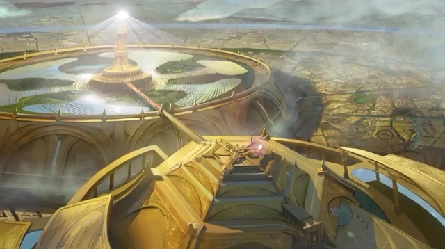

Słońce
Opis
Magia słońca czerpie z ciepła i energii Słońca. Magia Słońca ma dwoistą naturę: może wyczarować zaklęcia światła, wzrostu, pielęgnowania i transformacji - lub może wezwać ogień, ciepło i zniszczenie. Związane ze Słońcem stworzenia, takie jak Słoneczne Elfy, są często intensywne i charyzmatyczne i tworzą naturalnych przywódców.
Tajemnica
Tajemnica Słońca niesie ze sobą gwałtowną, pozytywną energię, ale manifestuje się również poprzez silne emocje, takie jak gniew, strach czy smutek. Może pochłonąć wszystko, czego dotknie, w fali ognistej destrukcji, lub może obdarzyć stworzenie olśniewającym światłem, stałym ciepłem lub parzącym dotykiem.
Splot
Splotem Słońca jest Kuźnia Słoneczna, wieża położona w sercu ufortyfikowanego miasta Lux Aurea, należącego do Słonecznych Elfów. Jej potężne światło jest zasilane przez otaczające pole luster w kształcie rogów Sol Regema; odbijają one pierwotną energię Słońca do centralnej kuli na szczycie wieży. Legenda głosi, że Wielka Kula została ofiarowana Słonecznym Elfom przez samo Słońce, choć w rzeczywistości początkowo było to Słoneczne Nasiono, które pielęgnowane przez pokolenia Słonecznych Elfów, stało się Wielką Kulą, jaką jest dzisiaj. Magia Kuźni Słonecznej była wykorzystywana do infuzji broni i wyposażenia Kuźni Słonecznej ogromnym ciepłem, które nie stygnie przez stulecia.
Quiz